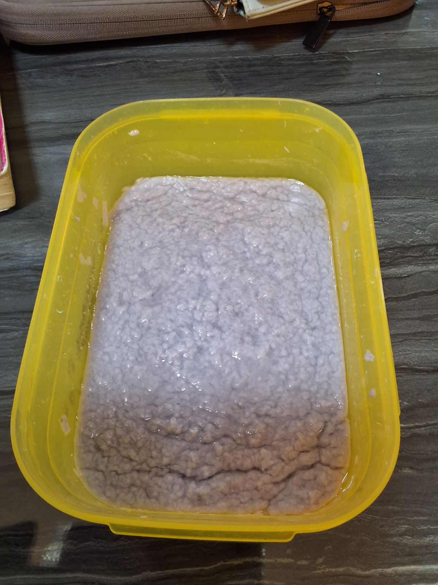
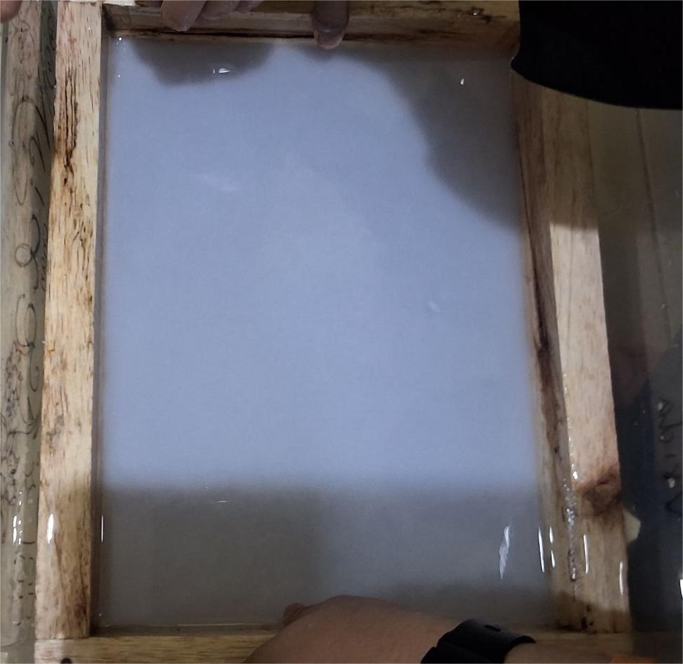
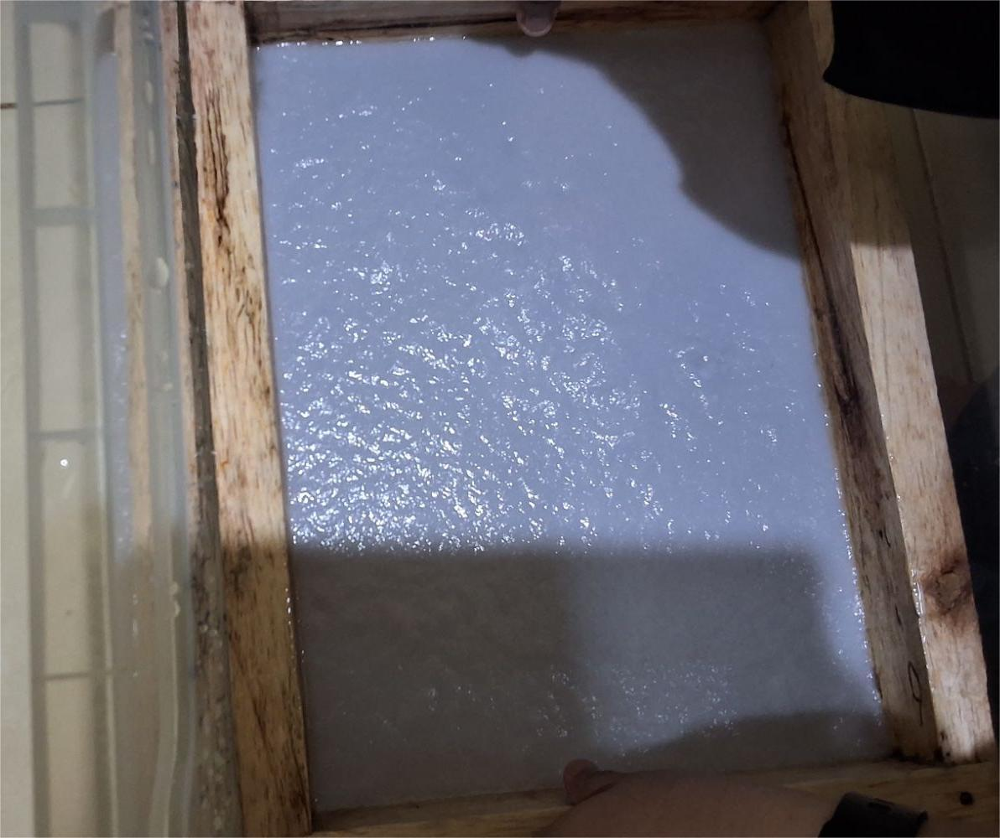

1

Tahap 1 — Vrida
Penghancuran
Kertas yang sudah dikumpulkan akan dipisah sesuai kriteria warna:
- Putih
- Abu
- Ivory
- Coklat susu
- Warna selain di atas (diproses terpisah)
Lalu kertas tersebut dipotong menjadi potongan kecil-kecil.
Catatan: Pemisahan warna membantu kualitas produk akhir.
2

Tahap 2 — Vrida
Peleburan
Kertas yang telah dipotong direndam air cuka:
- Air panas: 10 liter
- Cuka: 3 sendok makan
Didiamkan 12 jam, dibilas 2x, lalu diblender dengan rasio 1:3 hingga menjadi bubur halus.
Fungsi cuka: Melunakkan serat dan menetralkan tinta.
3

Tahap 3a — Pembentukan
Pembentukan Kertas
Untuk Kertas Lembaran:
- Bubur dimasukkan baskom dengan rasio 1:15
- Cetakan dicelupkan dan diangkat horizontal
- Ditaruh di kain tahu lembab, dijemur hingga kering
Tips: Angkat cetakan perlahan agar ketebalan merata.
4

Tahap 3b — Pembentukan
Pembentukan Aksesoris
Untuk Aksesoris Kertas:
- Bubur disaring dengan kain tahu
- Ditambahkan lem alami
- Dibentuk sesuai keinginan (bros, gantungan, hiasan)
- Dijemur hingga mengeras
Kreasi tak terbatas! Dari limbah kertas jadi aksesoris unik.
5

Tahap Akhir
Finishing & Siap Pakai
Setelah kering, produk melalui tahap finishing:
- ✂️ Pemotongan sesuai ukuran standar
- ✨ Pengamplasan tepian (untuk aksesoris)
- 🔍 Quality control sebelum dikemas
- 📦 Pengemasan ramah lingkungan
✨ Kertas daur ulang berkualitas & aksesoris unik ✨ siap menemani aktivitasmu!
Setiap produk adalah karya tangan autentik — tidak ada yang sama.